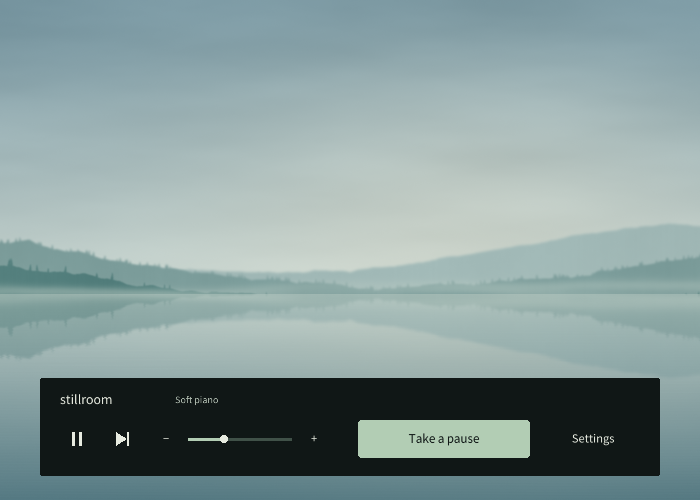

Open the app. Music begins.
Four built-in scores are ready to play. Or choose a folder of your own music. Tracks shuffle and blend gently into one another, without another playlist to keep tending.
Music. A quiet screen. Room to pause.
Stillroom is a small Windows app for music and a calm screen while you work. When you need a pause, click the background. The music keeps playing as gentle scenery takes its place.
Download for WindowsWindows x64 · Free & open source · 0.9

A still background. A few controls when needed.
Spend a moment with the scenery you chose.
Press Esc to return. The music carries on.
While you're working
Four built-in scores are ready to play. Or choose a folder of your own music. Tracks shuffle and blend gently into one another, without another playlist to keep tending.
Choose a quiet colour or a favourite image, dimmed to taste. In fullscreen, the controls disappear when left alone. Fill a spare display with a calm background, or keep your music in a small window.
When your attention needs somewhere to rest
Waiting for an AI response, or a little tired from working? Before reaching for your phone, let your eyes linger on water or woodland. A quiet place for the gaps in your day.


Water, woodland, stars and soft light. Pick a scene, motion and brightness in Settings beforehand. Graphics quality adapts automatically, or you can choose a fixed level up to Ultra. It will be there the next time you take a pause.
These eleven scenes have no menus to tend or timer to watch. Click the background again or press Esc to return to work. Stay for as long, or as little, as you like.
Another way to spend a pause Refined in 0.9
Take a seat on a little railcar and drift past lakes, woodland and open country. Watch the world go by, step outside and wander, or let automatic walking lead the way.
The journey is one of the scenery choices for your breaks. Esc returns you to work; your place will be waiting next time.
More about the journeyRest scenery is generated locally by the app. Preparing the journey for the first time can take a few seconds.
No account, network requests or analytics in the app. Your music and settings stay on your own computer.
Made for Windows in Haskell with raylib. English and Japanese controls. MIT licensed, with the source ready to explore.
Alongside whatever you're working on
Extract the ZIP and open stillroom.exe.
The built-in music starts, with a quiet, plain-colour screen.
Choose your music, background and rest scenery in Settings whenever you like.
When you need a pause, click the background outside the controls.
An early, unsigned Windows x64 release.
A capable graphics device is recommended for the journey.